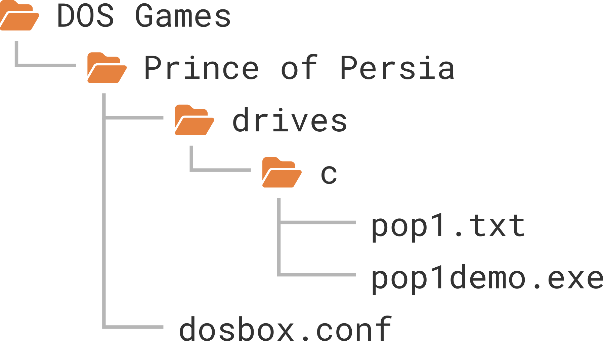
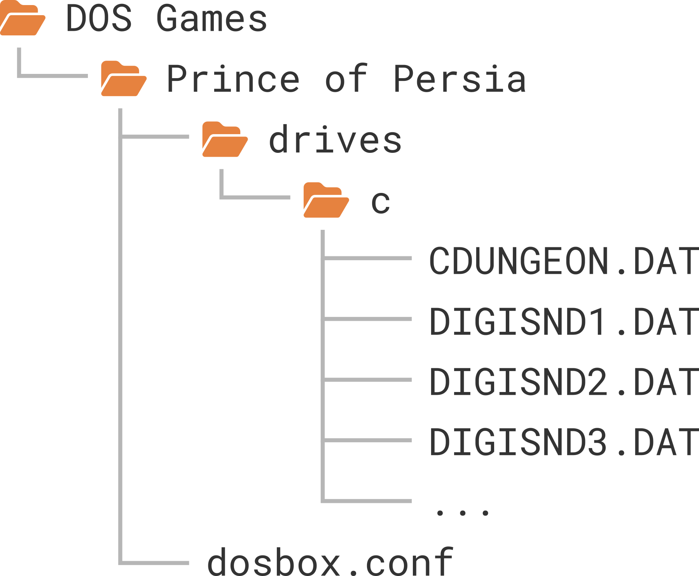

Setting up Prince of Persia¶
First steps¶
We will set up the demo version of Prince of Persia, the classic cinematic platformer from 1990 as our first example. It was a landmark game, and it can still provide you with countless hours of entertainment if you like platformers that require you to exercise that pesky grey matter a bit too.
First of all, we’ll create a new folder for storing all our DOS games. I’ll
use DOS Games throughout this guide, but you can pick any name you like.
It’s best to create this folder in your regular documents folder so DOSBox has
full read and write access to it (don’t put it in a system folder, e.g.,
Program Files on Windows). Each game will have its dedicated subfolder under
DOS Games, so let’s create our first one called Prince of Persia.
Now download pop1.zip and extract its contents
into DOS Games/Prince of Persia. The archive contained only two files:
pop1.txt (a regular text file) and pop1demo.exe (an MS-DOS executable).
Let’s open the text file in our text editor!
It's like an Arabian Nights movie come to life... with you as the star!
Leap into an exotic labyrinth of heart-stopping action, challenging mazes,
intrigue and superb animation that's breathtakingly realistic!
This is a demonstration version which only has limited functionality. To
obtain the full program, just access GO BB, and order it from our store.
I’m not quite sold on the “heart-stopping” part, but otherwise sounds intriguing! As indicated by the second paragraph, this is a fully playable demo version that includes only the first two levels of the game. That’s more than enough for our purposes here, and you can always get the full game later.
But there are no further instructions, so what should we do next? Well, setting up old DOS games is not all that dissimilar to solving adventure game puzzles. Getting past these puzzles requires some logical thinking, a little bit of background knowledge, and an element of trial and error is occasionally involved as well. Well, the user manual often helps too if you happen to own the original, or are able to procure a scanned copy online (most often you can).
Luckily, this is an easy one: MS-DOS executables have the exe or com file
extension, so looking at pop1demo.exe the solution is quite obvious: we’ll
need to run this executable file in DOSBox!
The C drive¶
Most DOS games need a hard drive as a hard requirement (okay, I’ll show myself to the door…), but DOSBox doesn’t have access to your computer’s hard drive by default where your programs and documents reside—we need to tell it which folder to use as its “virtual DOS hard drive”. This is called mounting; we mount a folder as the “DOS hard drive”, the contents of which are then available to DOSBox as the C drive. All drives in DOS are assigned to the letters of the English alphabet (just like in Windows) and the C drive is usually your first hard drive.
The recommended way to mount the C drive is to create a drives subfolder
inside your game folder. This drives folder is a “magic” folder with a
special purpose: all its subfolders having single-letter names are
automatically mounted as DOS drives with the same letter. In our case, we only
need a single C drive, so we’ll create a c subfolder inside our drives
folder (technically, it does not make a difference if you use uppercase or
lowercase C on Windows and macOS; Linux people should use lowercase c).
We’ll then copy the files from the pop1.zip archive into drives/c to end
up with the following folder structure:

Origins of the C drive
Have you ever wondered where the “C drive” in Windows got its name from? This is something Windows inherited from its MS-DOS heritage. In DOS, all drives are assigned letters from A to Z. Most computers of the era had two floppy drives, so letters A and B were reserved for them or other removable media, and the first hard drive partition was usually assigned to the letter C. We no longer have floppy drives in our computers as standard equipment, but this tradition stuck around for backwards-compatibility reasons.
Important
If you’re a Windows user, do not confuse your real C drive where your operating system and programs are stored with the “virtual DOS C drive” of DOSBox. It is important to understand the distinction between these two as they are completely separate concepts—DOSBox will not see the contents of your real C drive by default (or the contents of any of your other drives, for that matter).
Starting DOSBox¶
Okay, with our C drive set up and ready to go, the next step is to start
DOSBox from our DOS Games/Prince of Persia folder. This is accomplished
slightly differently on each platform:
Windows
Warning
After installing DOSBox Staging, it’s highly recommended to open it once using the Start Menu shortcut of the desktop icon as described here, otherwise the below instructions might not work.
If you have used the installer with the default options to set up DOSBox (and
it’s highly recommended to do so while you’re still learning the ropes),
simply right-click on the Prince of Persia folder in Windows Explorer and
select the Open with DOSBox Staging in the context menu.
Alternatively, you can enter the folder, right-click anywhere on the blank area inside the folder, then select Open with DOSBox Staging in the context menu.
macOS
Warning
After installing DOSBox Staging, you must open it first using its application icon as described here, otherwise the below instructions won’t work.
- Mount the DOSBox installer
.dmgimage file. - Copy the Start DOSBox Staging icon from the appearing window into the
Prince of Persiafolder. - Right-click or Ctrl-click the icon, then select the topmost Open menu item.
- A dialog with the following text will appear: macOS cannot verify the developer of “Start DOSBox Staging”. Are you sure you want to open it?
- Press the Open button.
- A dialog will open, asking for permission to allow DOSBox access your Documents folder. Click on the OK button.
You only need to perform this procedure once when opening the Start DOSBox Staging icon for the first time. After the first launch, you can use it like any other regular icon.
Tip
To avoid having to repeat these steps whenever you set up a new game, copy
an icon on which you have performed this initial procedure already, rather
than keep copying the original one from the .dmg file.
Linux
Open your favourite terminal, cd into the Prince of Persia directory, then
run the dosbox command from there.
Make sure to check with the --version argument that you’re running DOSBox
Staging and not some other DOSBox variant:
% dosbox --version
dosbox-staging, version 0.81.0
Copyright (C) 2020-2022 The DOSBox Staging Team
License: GNU GPL-2.0-or-later <https://www.gnu.org/licenses/gpl-2.0.html>
Alternatively, create a shell script or a shortcut on your desktop that executes the following command:
dosbox --working-dir <PATH>
<PATH> is the absolute path of your game directory (Prince of Persia in
this case).
Installing the game¶
You’ll be greeted by the following window when starting DOSBox:
{kind=link}
Let’s ignore the polite welcome message for now and focus on the text below the blue banner.
Local directory drives/c/ mounted as C drive Z:\>_
The first line is pretty straightforward—it tells us that DOSBox mounted
drives/C we created earlier as the C drive.
The second line is the DOS prompt. DOS has a command line interface that predates graphical user interfaces we’re accustomed to from modern operating systems. We get DOS to do things by typing in commands, and if manage to do this correctly, DOS will follow our instructions to the letter (pun intended!) DOS is not a multitasking operating system; you can only do a single thing in it at any given point in time.
Let’s analyse the prompt a little bit. It always starts with a letter followed
by a semicolon which denotes the current drive. Right after startup, this is
always the Z drive. This is a special drive that’s always available; DOSBox
stores some of its commands on it—you don’t need to worry about it now.
After the semicolon is the path of the current folder or current directory
in DOS terminology. This is currently the root directory of the Z drive as
indicated by the \ (backslash) character. The > character just signifies
the end of the prompt, and the blinking underscore (_) character after it
is—guess what?—the cursor.
Okay, enough theory, type in C: and then press Enter to switch
to the C drive. The prompt should now reflect that we’re in the root directory
of the C drive:
Z:\>c: C:\>_
Type in dir and press Enter to list the contents of the current
directory:
C:\>dir
Volume in drive C is CDRIVE
Directory of C:\
POP1 TXT 362 07/07/1995 10:12a
POP1DEMO EXE 267,420 07/05/1995 9:53a
4 file(s) 268,116 bytes
0 dir(s) 262,144,000 bytes free
C:\>_
Well, that’s what we put into our virtual C drive, so nothing too spectacular
so far. We’ll execute pop1demo.exe next! Type in pop and press the
Tab once to instruct DOSBox to complete the filename for you.
This handy feature is called tab completion and it saves you from a lot of
typing! Press Tab a few more times and observe how it alternates
between POP1.TXT and POP1DEMO.EXE; this makes sense as these are the only
two files in the current directory that start with pop.
TODO command history
Okay, let’s make sure POP1DEMO.EXE is displayed in the prompt then press
Enter to run this executable file. It turns out this is a
self-extracting archive that unpacks its contents into the current directory
when you run it. The following will appear (I’ve redacted the list of
extracted files):
C:\>POP1DEMO.EXE PKSFX (R) FAST! Self Extract Utility Version 2.04g 02-01-93 Copr. 1989-1993 PKWARE Inc. All Rights Reserved. Shareware version PKSFX Reg. U.S. Pat. and Tm. Off. Searching EXE: C:/POP1DEMO.EXE Inflating: CDUNGEON.DAT Inflating: DIGISND1.DAT ... Inflating: PRINCE.EXE C:\>_
The more observant among you might have noticed the last entry, PRINCE.EXE.
Bingo, that’s our game executable! But let’s pretend we haven’t spotted it;
how do we find all executables in the current directory? By issuing the dir
command with the *.exe wildcard search pattern!
C:\>dir *.exe
Volume in drive C is CDRIVE
Directory of C:\
POP1DEMO EXE 267,420 07/05/1995 9:53a
PRINCE EXE 123,335 03/29/1990 0:00a
2 file(s) 390,755 bytes
0 dir(s) 262,144,000 bytes free
C:\>_
Starting the game¶
There’s nothing else left to do than to start PRINCE.EXE (type in
PRINCE.EXE and press Enter). After a short loading time, the
title screen will appear and you’ll hear the classic Prince of Persia intro
music playing! Don’t press any key yet, just wait and watch the intro sequence
until the end to learn about the game’s backstory.
{kind=link}
{kind=link}
If you keep watching, the game will enter demo mode, where the protagonist will soon meet his untimely death… Surely we can do better than that! Press any key to start the game!
You control the prince with the cursor keys, and you can walk carefully by holding the Shift key. It’s not that hard to figure out the various movement combinations on your own, but reading the Controlling Your Movements section of the user manual should definitely help. The manual also contains helpful hints and a full list of keyboard shortcuts you can use during the game.
{kind=link}
This is where the adventure starts!
Congratulations, you’ve got your very first DOS game running in DOSBox! Have some fun, try to find the sword and overcome a few guards, maybe even attempt to fully complete the first level.
You can quit the game by pressing Ctrl+Q which will return you to the DOS
prompt. There you can use the exit command to close DOSBox. Of course, you
can quit DOSBox any time by pressing Alt+F4 on Windows and Linux, or
Cmd+Q on macOS.
Note
The Ctrl+Q shortcut for quitting the game is specific to Prince of Persia. Other games might provide completely different mechanisms for exiting to DOS, or perhaps none at all.
How to approach old games
If you’ve only ever played modern games, you’re probably in for a bit of a culture shock! There’s minimal to no handholding in most DOS games from the 1980s and the 90s, you are expected to read the user manual, often there is no in-game tutorial, and the games are generally unforgiving and require a level of dedication from the player that’s uncommon in more modern titles.
However, this does not mean that these games are less fun, on the contrary! The old adage “you get what you put in” is certainly true for old DOS games. Many people (including the author of this present article) think that the satisfaction and enjoyment you get when mastering such difficult games have few parallels in the modern gaming landscape.
Auto-executing commands at startup¶
Every time we want to play the game, we need to type in DOS commands to switch
to the C drive and run prince.exe from there. Isn’t there a way to
automate this?
There certainly is! We need to create a so-called configuration file that can contain various settings to customise the behaviour of DOSBox, along with a list of commands to auto-execute at startup.
Launch your text editor of choice and create a new plain text file called
dosbox.conf inside the Prince of Persia folder with the following content:
The commands you want to be executed right after startup should be listed in
the aptly titled [autoexec] configuration section, each command in a
separate line. Configuration sections are introduced by names enclosed in square
brackets; everything that follows belongs to that section.
Warning
Some text editors insist on using appending the .txt extension after the
filename you enter in their save dialog. This might result in creating a
file called dosbox.conf.txt which won’t work. Get to know your text
editor and make sure you save the configuration file as dosbox.conf.
When DOSBox starts, it looks for this special dosbox.conf file in the folder
it was started from, and if it finds it, it configures the DOS environment and
DOSBox itself according to its contents. This is handy because we can put a
different configuration file into each of our game folders to set them up
differently.
Just to make everything absolutely clear, this is the folder structure we should have at this point:

Starting up DOSBox from the Prince of Persia folder should now launch the
game right away without any manual intervention!
So far so good—now let’s see how we can use the advanced features offered by DOSBox Staging to our advantage!